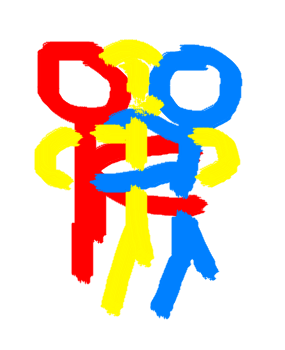
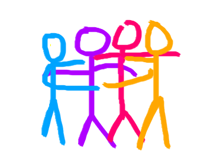
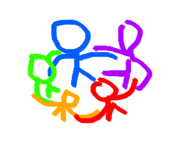

While one-on-one hugging is complicated enough as it is, the complications increase exponentially as number of people involved in the hug increase.
There are many intricacies with the one-on-one hug, such as whether you should have arms above or below the shoulders, how long and tightly you should hug, etc. But the general logistics of how the hug comes together is fairly simple.
With three people, it's also fairly doable to have a decent hug, as such;

The three person hug is also fairly intuitive, I've rarely seen it done incorrectly.
With a four person hug, a problem arises. You'll notice that the people on the outside are getting less hug.

At around five people, things start going to hell.

What is this garbage??? Why does it look like a huddle? Are we playing football? At least it's better than going into "flower petal" mode, where people form a circle hugging people on the inside. Flower petal mode causes dramatic imbalance with the amount of hug each person gets.
There has to be a better way! Luckily, I've been able to engineer a new formation that works perfectly for 5+ person group hugs.
This is a Donut Hug!
- Stand in a circle with your group, with each person facing another person's back
- Each person should place their hand on the waist of the person in front of them.
- On a loose (not totally necessary) count down, have all participants move into hug formation, hugging the person in front of them from behind.
Why is the Donut Hug optimal for group hugs?
- Equal hugs for everyone by virtue of the cyclic formation. No one feeling awkward or left out.
- Hugs are even better quality than one-on-one hugs. With average human sizes, each person can hug two people in front of them.
- Extra contact point with less than 12 people, as the circle closes in a way where your sides touch people on the inside of the circle
- Not line-like, making it a good position for communication.
- Hugging from the back is extra intimate.